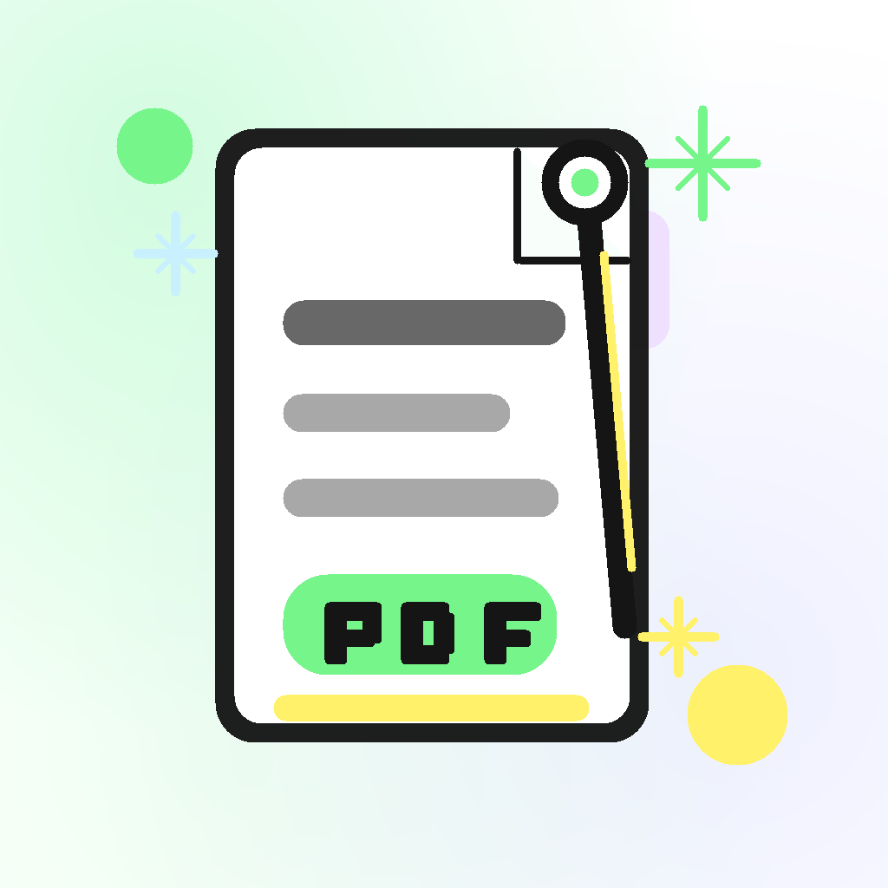
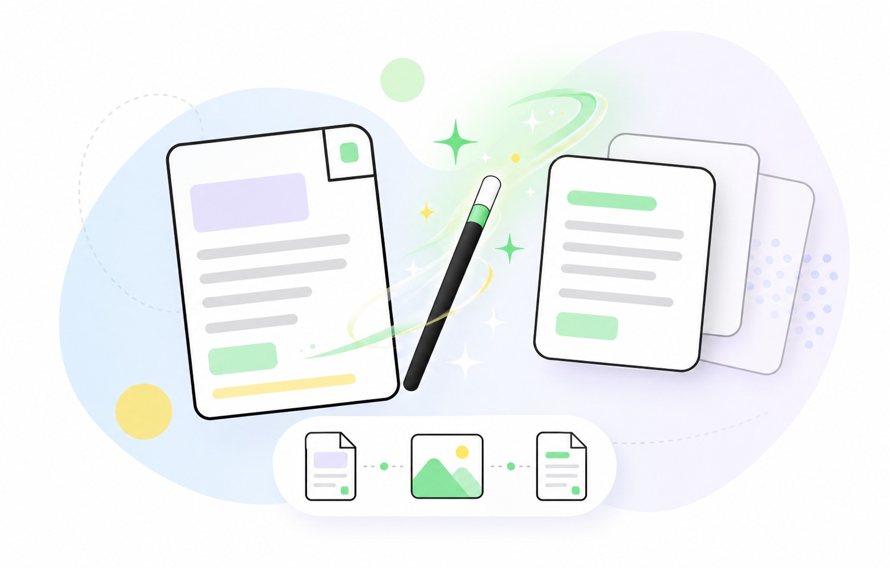

Magical PDF
Превращает PDF в чистый скан без текстового слоя

PDF → JPEG → PDF
Выберите PDF или перетащите сюда
Файл будет обработан на вашем устройстве
Качество
Высокое
Среднее
Низкое
Создать страницы JPEG
↓ Скачать
Создать новый PDF
↓ Скачать
Выберите PDF, затем нажмите нужное действие